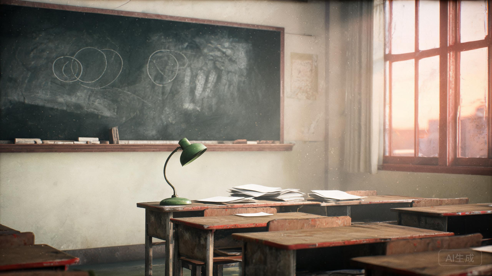

2026年8月17日，傍晚。旧教学楼三天后拆除。
黑板擦得很干净，粉笔槽里有一截断掉的粉笔。

你把带回来的材料摊在课桌上。名单、病历、磁带、报纸、假钞、还有一枚从冷库墙角捡到的厂徽。
黑板上的粉笔字不是你的。是很多年前，某个坐在这里的人留下的。现在，轮到你写。
提示：答案不是猜谜。三组编号都能从已归档的材料里找到。全部 13 份材料归档，并且真正打开冷库第三排铁盒里的试药名单之后，才能抵达真正的结案。
FINAL REPORT · 三组编号 · 三个判断
提交后，你会看到一个结局。结局有五种：你的判断和归档材料，会决定你走到哪一面墙前。